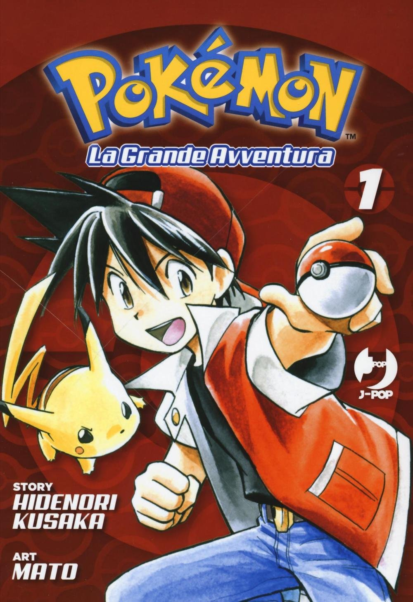

La Grande Avventura 1La Grande Avventura 1
JP 1997Vol. 1 1

- Edizione
- Edition
- Pokémon La Grande Avventura vol. 1 (J-Pop)
- Pokémon La Grande Avventura vol. 1 (J-Pop)
- Autori
- Creators
- Hidenori Kusaka (storia), Mato (disegni)
- Hidenori Kusaka (story), Mato (art)
- Contiene
- Contains
- Il primo blocco dell'arco di Kanto (Pocket Monsters SPECIAL vol. 1)
- The first block of the Kanto arc (Pocket Monsters SPECIAL vol. 1)
Perché è importante
Why it matters
Rosso, ragazzino di Biancavilla convinto di essere già il migliore, incontra il professor Oak (e il suo nipote-rivale Blu, che migliore lo è davvero) e parte con Saur, il Bulbasaur del laboratorio, e il fedele Poli. Non è l'anime: qui i Pokémon si feriscono, il Team Rocket fa paura sul serio e la caccia a Mew apre una trama che attraversa tutto l'arco. Il viaggio delle otto medaglie comincia con il tono da avventura vera che ha reso leggendario questo manga.
Red, a kid from Pallet Town convinced he is already the best, meets Professor Oak (and his grandson-rival Blue, who really is the best) and sets off with Saur, the lab's Bulbasaur, and his faithful Poli. This is not the anime: here Pokémon get hurt, Team Rocket is genuinely scary and the hunt for Mew opens a plot that runs through the whole arc. The eight-badge journey begins with the real-adventure tone that made this manga legendary.